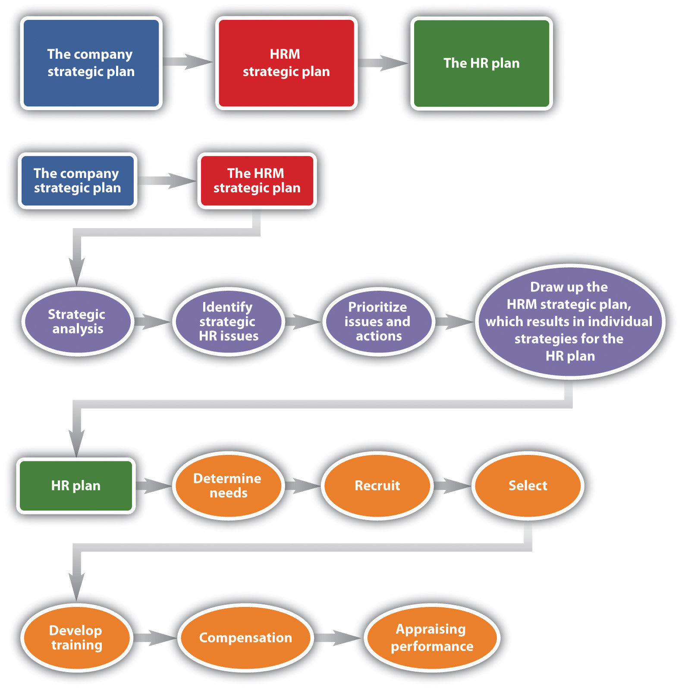

As addressed in Section 2.1 "Strategic Planning", the writing of an HRM strategic plan should be based on the strategic plans of the organization and of the department. Once the strategic plan is written, the HR professional can begin work on the HR plan. This is different from the strategic plan in that it is more detailed and more focused on the short term. The six parts described here are addressed in more detail in Chapter 4 "Recruitment", Chapter 5 "Selection", Chapter 6 "Compensation and Benefits", Chapter 7 "Retention and Motivation", Chapter 8 "Training and Development", Chapter 9 "Successful Employee Communication", Chapter 10 "Managing Employee Performance", and Chapter 11 "Employee Assessment".
Compensation Is a Touchy Subject
As the HR manager, you have access to sensitive data, such as pay information. As you are looking at pay for each employee in the marketing department, you notice that two employees with the same job title and performing the same job are earning different amounts of money. As you dig deeper, you notice the employee who has been with the company for the least amount of time is actually getting paid more than the person with longer tenure. A brief look at the performance evaluations shows they are both star performers. You determine that two different managers hired the employees, and one manager is no longer with the organization. How would you handle this?
How Would You Handle This?
https://api.wistia.com/v1/medias/1371287/embedThe author discusses the How Would You Handle This situation in this chapter at: https://api.wistia.com/v1/medias/1371287/embed.
Figure 2.3
As you can see from this figure, the company strategic plan ties into the HRM strategic plan, and from the HRM strategic plan, the HR plan can be developed.
The six parts of the HRM plan include the following:
Each chapter of this text addresses one area of the HR plan, but the next sections provide some basic knowledge of planning for each area.
The first part of an HR plan will consist of determining how many people are needed. This step involves looking at company operations over the last year and asking a lot of questions:
These are the questions to answer in this first step of the HR plan process. As you can imagine, this cannot be done alone. Involvement of other departments, managers, and executives should take place to obtain an accurate estimate of staffing needs for now and in the future. We discuss staffing in greater detail in Chapter 4 "Recruitment".
Many HR managers will prepare an inventory of all current employees, which includes their educational level and abilities. This gives the HR manager the big picture on what current employees can do. It can serve as a tool to develop employees’ skills and abilities, if you know where they are currently in their development. For example, by taking an inventory, you may find out that Richard is going to retire next year, but no one in his department has been identified or trained to take over his role. Keeping the inventory helps you know where gaps might exist and allows you to plan for these gaps. This topic is addressed further in Chapter 4 "Recruitment".
HR managers will also look closely at all job components and will analyze each job. By doing this analysis, they can get a better picture of what kinds of skills are needed to perform a job successfully. Once the HR manager has performed the needs assessment and knows exactly how many people, and in what positions and time frame they need to be hired, he or she can get to work on recruiting, which is also called a staffing planA detailed document that synthesizes information to determine how many people should be hired, when they should be hired, and what skills they should have.. This is addressed further in Chapter 4 "Recruitment".
Recruitment is an important job of the HR manager. More detail is provided in Chapter 4 "Recruitment". Knowing how many people to hire, what skills they should possess, and hiring them when the time is right are major challenges in the area of recruiting. Hiring individuals who have not only the skills to do the job but also the attitude, personality, and fit can be the biggest challenge in recruiting. Depending on the type of job you are hiring for, you might place traditional advertisements on the web or use social networking sites as an avenue. Some companies offer bonuses to employees who refer friends. No matter where you decide to recruit, it is important to keep in mind that the recruiting process should be fair and equitable and diversity should be considered. We discuss diversity in greater detail in Chapter 3 "Diversity and Multiculturalism".
Depending on availability and time, some companies may choose to outsource their recruiting processes. For some types of high-level positions, a head hunter will be used to recruit people nationally and internationally. A head hunterA person who specializes in matching jobs with people and usually works only with high-level positions. is a person who specializes in matching jobs with people, and they usually work only with high-level positions. Another option is to use an agency that specializes in hiring people for a variety of positions, including temporary and permanent positions. Some companies decide to hire temporary employees because they anticipate only a short-term need, and it can be less expensive to hire someone for only a specified period of time.
No matter how it is done, recruitment is the process of obtaining résumés of people interested in the job. In our next step, we review those résumés, interview, and select the best person for the job.
After you have reviewed résumés for a position, now is the time to work toward selecting the right person for the job. Although we discuss selection in great detail in Chapter 6 "Compensation and Benefits", it is worth a discussion here as well. Numerous studies have been done, and while they have various results, the majority of studies say it costs an average of $45,000 to hire a new manager.Susan Herman, Hiring Right: A Practical Guide (Thousand Oaks, CA: Sage, 1993), xv. While this may seem exaggerated, consider the following items that contribute to the cost:
Because it is so expensive to hire, it is important to do it right. First, résumés are reviewed and people who closely match the right skills are selected for interviews. Many organizations perform phone interviews first so they can further narrow the field. The HR manager is generally responsible for setting up the interviews and determining the interview schedule for a particular candidate. Usually, the more senior the position is, the longer the interview process takes, even up to eight weeks.John Crant, “How Long Does an Interview Process Take?” Jobsinminneapolis.com, December 2, 2009, accessed October 28, 2010, http://www.jobsinminneapolis.com/articles/title/How-Long-Does-an-Interview-Process-Take/3500/422. After the interviews are conducted, there may be reference checks, background checks, or testing that will need to be performed before an offer is made to the new employee. HR managers are generally responsible for this aspect. Once the applicant has met all criteria, the HR manager will offer the selected person the position. At this point, salary, benefits, and vacation time may be negotiated. Compensation is the next step in HR management.
What you decide to pay people is much more difficult than it seems. This issue is covered in greater detail in Chapter 6 "Compensation and Benefits". Pay systems must be developed that motivate employees and embody fairness to everyone working at the organization. However, organizations cannot offer every benefit and perk because budgets always have constraints. Even governmental agencies need to be concerned with compensation as part of their HR plan. For example, in 2011, Illinois State University gave salary increases of 3 percent to all faculty, despite state budget cuts in other areas. They reasoned that the pay increase was needed because of the competitive nature of hiring and retaining faculty and staff. The university president said, “Our employees have had a very good year and hopefully this is a good shot in the arm that will keep our morale high.”Stephanie Pawlowski, “Illinois State University to Get Salary Bump,” WJBC Radio, July 11, 2011, accessed July 11, 2011, http://wjbc.com/illinois-state-university-faculty-to-get-salary-bump.
The process in determining the right pay for the right job can have many variables, in addition to keeping morale high. First, as we have already discussed, the organization life cycle can determine the pay strategy for the organization. The supply and demand of those skills in the market, economy, region, or area in which the business is located is a determining factor in compensation strategy. For example, a company operating in Seattle may pay higher for the same job than their division in Missoula, Montana, because the cost of living is higher in Seattle. The HR manager is always researching to ensure the pay is fair and at market value. In Chapter 6 "Compensation and Benefits", we get into greater detail about the variety of pay systems, perks, and bonuses that can be offered. For many organizations, training is a perk. Employees can develop their skills while getting paid for it. Training is the next step in the HR planning process.
Once we have planned our staffing, recruited people, selected employees, and then compensated them, we want to make sure our new employees are successful. Training is covered in more detail in Chapter 8. One way we can ensure success is by training our employees in three main areas:
The last thing an HR manager should plan is the performance appraisal. While we discuss performance appraisals in greater detail in Chapter 11 "Employee Assessment", it is definitely worth a mention here, since it is part of the strategic plan. A performance appraisalA method by which job performance is measured. is a method by which job performance is measured. The performance appraisal can be called many different things, such as the following:
No matter what the name, these appraisals can be very beneficial in motivating and rewarding employees. The performance evaluation includes metrics on which the employee is measured. These metrics should be based on the job description, both of which the HR manager develops. Various types of rating systems can be used, and it’s usually up to the HR manager to develop these as well as employee evaluation forms. The HR manager also usually ensures that every manager in the organization is trained on how to fill out the evaluation forms, but more importantly, how to discuss job performance with the employee. Then the HR manager tracks the due dates of performance appraisals and sends out e-mails to those managers letting them know it is almost time to write an evaluation.
Have you ever been given a performance evaluation? What was the process and the outcome?
Communication is imperative in any workplace, but especially when giving and receiving a performance evaluation.